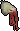

Your completions
Your loot

Nothing claimed yet
Enter a completion string to simulate your personal raid loot.
Unique rewards
Collected loot
Dry calculator results
How lucky are your drops?
Enter a completion string and your drops to calculate the odds.